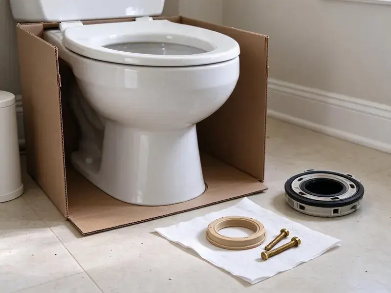

Bathtub Faucet Replacement in Orem, UT
A dripping tub spout wastes water and stains the tub. We replace bathtub faucets, valves and spouts across Orem, UT with durable parts.
- Fast Tub Faucet Service
- Pressure-Balance Valve Upgrades
- Licensed Plumbers
- Local Orem Experts
Get Steady, Safe Tub Water with a Faucet Upgrade in Orem, UT.
Our team is ready to provide top-notch plumbing solutions for your home.
Expert Bathtub Faucet Replacement Services in Orem, UT
BPK Plumbing provides complete bathtub faucet replacement solutions for homeowners in Orem, UT. We make sure your new faucet is installed correctly, preventing future issues and enhancing your bathroom's function.
Our expertise includes:
- Expert installation of all faucet types.
- Swap cartridges and stems for Moen, Delta and Price Pfister
- All major faucet brands replaced

Additional Bathroom Plumbing Services in Orem, UT
From toilets to showers, our bathroom plumbing team in Orem, UT handles repairs, installs, and upgrades with tidy, code-compliant work.


Customers
Why Choose BPK Plumbing for Bathtub Faucet Replacement in Orem, UT?
Choosing the right professionals for bathtub faucet replacement is important for the lifespan and performance of your plumbing system. Our team understands the plumbing challenges in Orem, from mineral deposits to older home plumbing.
- Tile Care, We use access panels and trim plates to reduce tile damage.
- Skilled Technicians, Our team is trained and experienced in all types of bathtub faucet replacement, ensuring a clean and efficient installation.
- Right Parts, We identify the exact valve so replacement parts fit the first try.
Citywide Coverage
From the historic districts to the newest developments, BPK Plumbing is your go-to plumber for bathtub faucet replacement across all of Orem. We ensure every resident has access to professional plumbing solutions.
Experienced Team
Our team solders, crimps and presses fittings as each job requires. That versatility lets us handle copper, PEX and galvanized tub supply lines with confidence.
Safety-First Approach
Safety and code compliance are top priorities in every bathtub faucet replacement we do. Our plumbers follow Utah plumbing codes and industry best practices to guarantee a safe and reliable installation.
Trusted Certified Orem Plumbing Services Professionals
At BPK Plumbing, we take pride in providing licensed, certified plumbing services throughout Orem, UT. Backed by leading industry credentials, our experienced plumbers combine technical skill with genuine customer care. Whether it is repair, installation, or maintenance, we follow strict safety and quality standards to deliver lasting results you can trust.
Call Us Now PHCC Plumbing Contractor Recognition
PHCC Plumbing Contractor Recognition Better Business Bureau (BBB) Accreditation
Better Business Bureau (BBB) Accreditation Angi Certified Pro
Angi Certified Pro ISO 9001 Quality Management Certification
ISO 9001 Quality Management CertificationExpert Bathtub Faucet Replacement Services in Orem, UT
Standard Bathtub Faucet Replacement in Orem
Whether you have a two-handle, single-handle, or a Roman tub faucet, our experts can replace it quickly. We remove the old unit, clean the area, and install your new faucet, ensuring all connections are secure and watertight. This service addresses common issues like constant dripping, difficulty turning handles, or visible corrosion on your existing fixture.

Emergency Bathtub Faucet Services in Orem, UT
A severely leaking or broken bathtub faucet can lead to serious water waste and potential damage. BPK Plumbing offers emergency replacement services to address urgent situations promptly. If your faucet is gushing water or completely inoperable, don't hesitate to call us for immediate assistance in Orem, UT.
Three-Handle to Single-Handle Valve Conversion in Orem
Many older homes still have three-handle tub and shower faucets. We remove the old valve, install a modern single-handle pressure-balance valve, and cover the old holes with a large remodel plate. This upgrade adds scald protection and simplifies cleaning. Tile damage is typically limited to what the trim plate covers.
Cost-Effective Faucet Solutions in Orem, UT
We provide affordable bathtub faucet replacement options to fit various budgets without compromising on quality. Our technicians can help you choose a durable and reliable faucet that meets your needs and offers long-term value. We believe in honest pricing, so you'll know the full cost upfront for your replacement in Orem, UT.
Delta Bathtub Faucet Replacement in Orem, UT
Delta is a popular brand known for its smart designs and reliable performance. If your Delta bathtub faucet is beyond repair or you're upgrading to a newer model, BPK Plumbing offers expert replacement services. We have experience with Delta's various lines, from their standard models to their more complex thermostatic units, ensuring a correct and leak-free installation anywhere in Orem, UT.
Upgrading Bathtub Faucets in Orem
Beyond repairs, many homeowners in Orem choose to replace their bathtub faucets for style upgrades or improved function. Whether you're looking for a modern single-handle design, a classic two-handle setup, or a shower-tub combo, we can help. Our plumbers confirm proper sizing and connection to your existing plumbing, making your bathroom refresh easy and efficient.
Tub Spout Replacement in Orem
Tub spouts crack, corrode and lose their diverter function over time. We match slip-on or threaded spouts to your pipe and replace them with a correct-length nipple when needed. A new spout stops water from shooting out while the shower is on. It is a fast fix with a big improvement in function.

Cartridge and Stem Replacement in Orem, UT
Many dripping tub faucets just need a new cartridge or stem and seat. We replace Moen 1222 and 1225 cartridges, Delta single-handle cartridges, and two-handle stems for older brands. We also clean scale from the valve body so the new part seals. This often costs much less than a full valve swap.
Bathtub Faucet Replacement Near Me in Orem, UT
When you search for 'bathtub faucet replacement near me,' BPK Plumbing is the go-to choice for quality work and exceptional customer service. We work to be a community-focused plumbing company, making sure that every homeowner in Orem has access to expert plumbing solutions for their bathtub fixtures.
When you search for 'bathtub faucet replacement near me' in Orem, UT, BPK Plumbing is your reliable local choice. Our team is strategically located to provide quick response times for all your plumbing needs.
BPK Plumbing at a Glance
- Licensed and insured plumbers serving Orem, UT
- 24/7 emergency service with same-day scheduling
- Clear written estimates, no hidden fees
- 4.8-star rated by 470+ Utah customers
Orem Map
Orem Information
- Population
- 95,519
- Area codes
- 801/385/435
- Service area
- Orem and communities within 40 miles
- Nearby
- Provo, Saratoga Springs, Lehi, Draper
Utah water is among the most mineral-heavy in the country in many areas, and scale builds up quickly in water heaters, faucets and appliances. For homes in Orem, UT, professional bathtub faucet replacement ensures durability and prevents expensive leaks.
Expert Services
Trust our professionals for reliable BPK Plumbing solutions in Orem, UT.
Our Specialized Plumbing Services in Orem, UT
At BPK Plumbing, we provide a complete range of plumbing services across Orem, UT. From leak detection to full system installations, our team ensures fast, precise, and affordable service for both residential and commercial properties. Explore our core services below:


How Our Bathtub Faucet Replacement Process Works in Orem, UT
Replacing a tub faucet is straightforward with the right plan.
Request a Quote
Contact us at (385) 543-4073 to discuss your bathtub faucet replacement needs. We'll gather initial information and schedule a good time for an on-site assessment.
On-Site Assessment
A certified plumber will visit your Orem home to inspect your current faucet, assess the plumbing, and discuss your replacement options. We'll provide a straight, upfront estimate.
Professional Installation
Our team will expertly remove the old faucet and install the new one, ensuring all connections are secure and tested for leaks. We'll also clean up the work area thoroughly.
Frequently Asked Questions About Bathtub Faucet Replacement in Orem
The cost of bathtub faucet replacement in Orem can range from $200 to $600, depending on the complexity of the installation, the type of faucet chosen, and any necessary pipe adjustments. This estimate usually includes labor and basic faucet models, but premium fixtures will increase the overall price.
Corroded valve bodies, discontinued parts, persistent temperature swings and leaks behind the wall are signs a full replacement is the smarter choice.
Often not much. We access the valve from behind through a closet or panel when possible, or use a remodel plate to cover the old opening.
Spout and trim swaps take about an hour. Cartridge replacement takes one to two hours, and a full valve replacement may take between three and six hours.
Most standard bathtub faucet replacements can be done within 1 to 3 hours. However, more complex installations, such as those involving older plumbing or custom fixtures, might take longer. Our plumbers work efficiently to minimize disruption.
A like-for-like cartridge or trim swap does not. Replacing the in-wall valve may require a permit in some jurisdictions, and we take care of that if needed.
Spout and handle swaps are fair DIY projects. In-wall valve replacement involves soldering or crimping and is best done by a plumber.
Our labor is guaranteed, and most major brands offer lifetime limited warranties on their valves and cartridges for home use.
What People Are Saying About Our Plumbing Experts?

Daniel K.
A pipe burst at 11 pm and they actually answered. The plumber showed up within the hour, shut everything down, and had us back to normal the next morning. Could not ask for more.
Emergency Plumbing · Eagle Mountain, UT
James P.
Our commercial plumbing system had a leak under the sink, and BPK Plumbing handled it professionally. The plumbers arrived quickly and restored everything without disruption to our customers.
Commercial Plumbing · Eagle Mountain, UT
Sofia M.
Two new toilets installed in one visit, no mess left behind, and the tech even adjusted a faucet he noticed was dripping. Fair pricing and really friendly.
Toilet Installation · Provo, UT
Patricia H.
We had a slab leak that two other companies could not find. BPK Plumbing located it in under an hour, explained our options, and the price matched the quote to the dollar.
Slab Leak Repair · Saratoga Springs, UT
Mark T.
When our office needed drain cleaning, BPK Plumbing provided quick, reliable service. The plumber arrived on time and made sure every drain flowed perfectly before leaving. Very satisfied.
Drain Cleaning · Lehi, UTLaura S.
I scheduled a water heater replacement, and the team made the process smooth and affordable. The new unit works perfectly, and they cleaned up after completing the job.
Water Heater Replacement · Sandy, UT